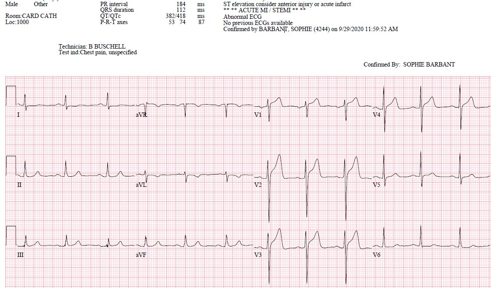
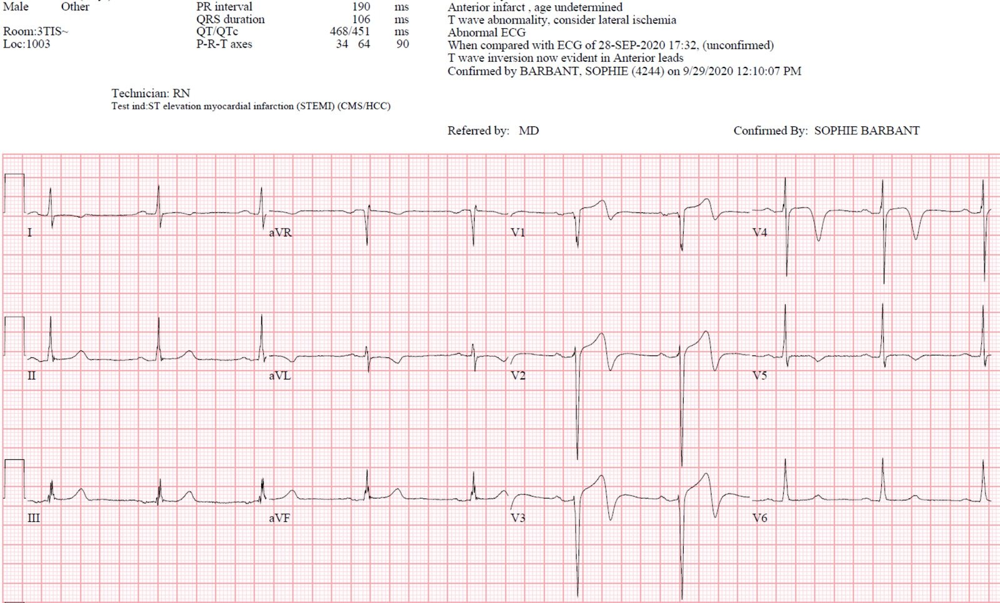
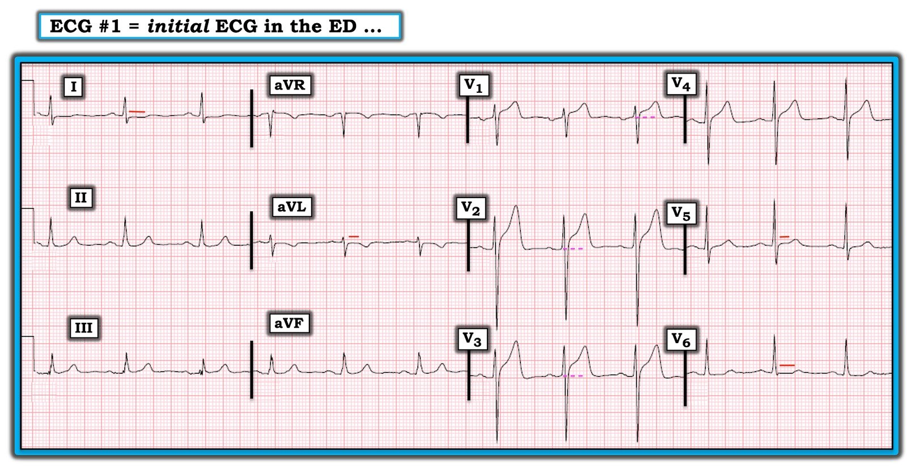

23/10/2020 — Nam bệnh nhân 40 mấy tuổi than đau ngực đáng lo ngại và có thể có “sốt”
Bản dịch tiếng Việt của bài "A 40-something male complains of worrisome chest pain and possible “fever”" – Dr. Smith’s ECG Blog. Giữ nguyên toàn bộ 5 hình ảnh của bản gốc.
Ca này do một đồng nghiệp cấp cứu ở Bệnh viện Highland tại Oakland gửi đến. Tên anh ấy là “Deep”
Một nam bệnh nhân 40 mấy tuổi than đau ngực và khó thở (SOB), khởi phát 2 giờ trước khi đang làm việc và ngày càng nặng dần. Ngoài ra, anh còn buồn nôn, nôn và than có sốt. Cơn đau liên tục, kiểu đè ép, sau xương ức, không lan, cường độ 10/10.
Anh cho biết vợ anh được chẩn đoán Covid 3 tháng trước và bản thân anh cũng đã được xét nghiệm nhưng chưa bao giờ nhận được kết quả.
Huyết áp 213/128. Có vẻ như không đo nhiệt độ vì bệnh nhân trông rất khó chịu. Mãi đến rất lâu sau mới ghi nhận nhiệt độ, khi đó là 36.5.
Đây là điện tâm đồ lúc phân loại (triage) của anh:


Có ST chênh lên đạt tiêu chuẩn STEMI ở V2 và V3
Bạn nghĩ gì?
Troponin I thế hệ 4 ban đầu dưới 0.010 ng/mL (không phát hiện được).
Điện tâm đồ này trông rất giống tái cực sớm vì:
1. Sóng T không đối xứng (sườn lên chậm hơn, sườn xuống nhanh hơn) 2. Có hình lõm hướng lên (upward concavity) ở tất cả các chuyển đạo V2-V6 (trong ca này, thậm chí cả ở V1) 3. Không có ST chênh xuống soi gương 4. Không có biến dạng phần cuối QRS (có sóng S ở cả V2 và V3) 5. Không có sóng Q
Tuy nhiên, có ST chênh lên nhiều và sóng T dương ở V1: (Trong nghiên cứu của chúng tôi, sóng T dương ở V1 gặp ở 46% người bình thường và 73% trường hợp tắc LAD. Sóng T ở V1 lớn hơn sóng T ở V6 gặp ở 15% người bình thường và 39% trường hợp tắc LAD. Cả hai kết quả đều có ý nghĩa thống kê cao nhưng không làm tăng thêm giá trị cho công thức hồi quy logistic đa biến.
Vì V1, và cũng do bệnh cảnh lâm sàng của bệnh nhân, Deep khá chắc chắn đây là STEMI, nhưng vì điện tâm đồ cũng có nhiều đặc điểm của ST chênh lên lành tính (cũng thường được gọi là “Tái cực sớm”), vốn cũng có STE ở V2-V4, nên anh đã dùng công thức 4 biến tương đối mới, dùng để phân biệt tắc LAD kín đáo (theo nghĩa là trông bình thường) với ST chênh lên biến thể bình thường.
Xem cách dùng công thức tại đây: 12 Example Cases of Use of 3- and 4-variable formulas to differentiate normal STE from subtle LAD occlusion
CẢNH BÁO: công thức này không hoàn hảo. Hãy cẩn thận khi dùng nó để đảo ngược nhận định trước đó của bạn rằng điện tâm đồ thể hiện tắc LAD. Tôi khuyên dùng nó khi bạn lo rằng một điện tâm đồ có vẻ là ST chênh lên bình thường lại có thể là tắc LAD. Độ nhạy không hoàn hảo.
Với các giá trị này, anh tính công thức theo 4 biến: QTc-Bazett = 418, QRSV2 = 33, sóng R ở V4 = 12.5, STE (60 ms sau điểm J) = 4. Giá trị = 17.65. 18.2 là điểm cắt chính xác nhất.
Trong nghiên cứu thẩm định ngoài này, “điểm cắt đã công bố 18.2 có độ nhạy, độ đặc hiệu và độ chính xác chẩn đoán lần lượt là 83.3%, 87.7% và 85.9%.” A tale of two formulas: differentiation of subtle anterior MI from benign ST segment elevation.
Hãy nhớ rằng chỉ tắc LAD kín đáo mới được nghiên cứu, vì vậy độ nhạy đối với mọi trường hợp tắc LAD cao hơn đáng kể.
Trong dữ liệu Hennepin của chúng tôi, độ nhạy tại điểm cắt 17.0 là 97% (chỉ 3% trường hợp tắc LAD có giá trị dưới 17.0).
Diễn biến lâm sàng
Deep nhận ra đây là một giá trị công thức âm tính giả, và anh đã kích hoạt phòng thông tim. Phát hiện tắc LAD 100%, được mở thông và đặt stent.
Đây là điện tâm đồ sau PCI:


Sóng T Wellens kiểu A điển hình, chẩn đoán tái tưới máu.
Đáng chú ý, biên độ sóng R không lớn, gợi ý đã mất một lượng cơ tim đáng kể.
(Sóng T Wellens kiểu A hai pha, với phần cuối sóng T đảo ngược — lên-xuống).
Các sóng này sẽ luôn tiến triển thành Wellens kiểu B trong vòng vài giờ đến một ngày.
Diễn tiến điển hình của sóng T Wellens trong 26 giờ
Troponin đỉnh là 19.9 ng/mL, điển hình cho STEMI, nhưng ở mức thấp trong khoảng troponin đỉnh của STEMI thành trước.

===================================
BÌNH LUẬN CỦA TÔI, bởi KEN GRAUER, MD (24/10/2020):
===================================
Ca hôm nay KHÓ! — và là ca mà tôi hoàn toàn thừa nhận rằng mình không hề chắc chắn về câu trả lời sau khi xem điện tâm đồ ban đầu. Những lý do khiến ca này khó đến vậy gồm:
- Lý do #1: Điện tâm đồ ban đầu trông rất giống một biến thể tái cực (vì 5 dấu hiệu Dr. Smith đã nêu ở trên).
- Lý do #2: Ít nhất cũng có điện thế đạt tiêu chuẩn LVH (theo tiêu chuẩn Peguero) — và xét đến việc huyết áp của bệnh nhân này lúc phân loại tăng rõ rệt đến mức nào (tức là 213/128 mm Hg!) — rất có thể có lớn buồng tim thực sự.
==========================
LƯU Ý: Trong số các tiêu chuẩn chẩn đoán LVH trên điện tâm đồ mà tôi ưa dùng — có tiêu chuẩn Peguero, theo đó: có LVH NẾU tổng của sóng S sâu nhất ở bất kỳ chuyển đạo ngực nào + sóng S ở V4 ≥23 mm (nữ) hoặc ≥28 mm (nam). Nếu sóng S sâu nhất nằm ở chuyển đạo V4 — thì nhân đôi giá trị này.
- Áp dụng tiêu chuẩn Peguero cho điện tâm đồ #1 trong ca hôm nay (Hình 1 bên dưới) — sóng S sâu nhất ~21 mm ở chuyển đạo V2 + sóng S ~ 11 mm ở chuyển đạo V4 = 32 mm, đạt tiêu chuẩn điện thế của LVH.
- Ai muốn ôn lại “Quan điểm của tôi” về một cách tiếp cận dễ dùng để chẩn đoán LVH trên điện tâm đồ — Xin XEM Bình luận của tôi ở cuối trang trong bài ngày 20 tháng Sáu năm 2020 của Dr. Smith’s ECG Blog.
==========================
ĐIỂM THEN CHỐT (PEARL) #1: Mặc dù bác sĩ cấp cứu trong ca này đã biết kích hoạt phòng thông tim ngay lập tức — Bạn không cần phải quyết định dứt khoát có hay không OMI cấp chỉ dựa trên một điện tâm đồ duy nhất này!
- Chúng tôi đã trình bày nhiều ca trên Dr. Smith’s ECG Blog về OMI đang tiến triển cấp tính, trong đó điện tâm đồ thứ 2 ghi không quá vài phút sau đã cho thấy rõ thay đổi tối cấp hoặc ST chênh lên rõ ràng. Vì vậy — Ghi lại điện tâm đồ sau ~5-15 phút (và nếu cần, ghi thường xuyên sau đó) — và nhiều khả năng “Câu trả lời” sẽ sớm lộ rõ.
- Các phương tiện khác (tức là troponin độ nhạy cao, siêu âm tim khẩn trong lúc đau ngực, tìm điện tâm đồ cũ để so sánh) đều có thể giúp làm rõ liệu có OMI đang diễn ra hay không.
- Dù vậy, ngay cả khi không có chẩn đoán OMI dứt khoát trên điện tâm đồ — đau ngực dai dẳng + các dấu hiệu điện tâm đồ mà chúng ta thấy ở điện tâm đồ #1 là đủ để biện minh cho việc thông tim kịp thời.
HÃY XEM lại MỘT LẦN NỮA điện tâm đồ ban đầu trong ca hôm nay (Hình 1).
- BAO NHIÊU CHUYỂN ĐẠO có dấu hiệu điện tâm đồ đáng ngờ? Các bất thường đó LÀ GÌ?
- GỢI Ý: Hãy nhìn vào các chuyển đạo có đường chấm ngang màu ĐỎ hoặc HỒNG.


Hình 1: Điện tâm đồ ban đầu trong ca này (Xem bài).
SUY NGHĨ CỦA TÔI về điện tâm đồ #1:
Khi lần đầu xem ca này (trước khi tôi đọc diễn biến sau đó) — tôi ý thức được 3 loại thông tin “đầu vào” đã góp phần vào quá trình ra quyết định của mình:
- Đầu vào loại #1: Xem xét Bệnh sử = một người đàn ông 40 mấy tuổi đến khoa cấp cứu vì đau ngực mới khởi phát chỉ mới 2 giờ trước đó. Đau ngực kiểu đè ép và liên tục, mức độ nặng 10/10. Rõ ràng, bệnh cảnh này đặt bệnh nhân vào nhóm có khả năng cao bị OMI ngay cả trước khi bạn nhìn vào điện tâm đồ của anh!
- Đầu vào loại #2: Xem xét các dấu hiệu điện tâm đồ khách quan trên bản ghi ban đầu làm tăng thêm mối lo ngại. Gồm: i) ST chênh lên ở chuyển đạo V1 trông không tương xứng so với độ sâu khiêm tốn của sóng S ở chuyển đạo này; ii) ST chênh lên có phần nhiều hơn dự kiến ở 2 chuyển đạo trước kế tiếp (chuyển đạo V2 và V3); iii)ST dẹt bất thường ở các chuyển đạo I, V5 và V6 (các đường ngang ngắn màu ĐỎ ở những chuyển đạo này); iv) đoạn ST dẹt trước sóng T đảo ngược ở chuyển đạo aVL (tức là Mặc dù sóng T ở aVL có thể đảo ngược bình thường khi phức bộ QRS ở chuyển đạo này chủ yếu âm — đoạn ST đi trước ở chuyển đạo aVL thường không dẹt như thấy ở đây) — và, v) Sóng T dương ở chuyển đạo V1 lớn hơn sóng T ở chuyển đạo V6.
- Đầu vào loại #3: Xem xét “những điều tôi cảm thấy” nhưng không thể diễn đạt thành các tiêu chí khách quan. Xét thực tế bệnh nhân này đến viện với đau ngực đáng lo ngại mới khởi phát + điện tâm đồ ban đầu cho thấy ST chênh lên nhiều hơn dự kiến ở chuyển đạo V1 phía trước — nếu có gì đó thì, với tôi, có vẻ như dù sóng S nông hơn, mức ST chênh lên tại điểm J tương đối ở chuyển đạo V3 lại nhiều hơn mức thấy ở chuyển đạo V2. Cảm giác lo ngại “trực giác” của tôi càng tăng lên bởi nghi ngờ ST chênh lên bất thường ở thành trước này (ở các chuyển đạo V1, V2 và V3) — trong bối cảnh ST dẹt bất thường và không bình thường ở 4 chuyển đạo bên (chuyển đạo I, aVL; V5 và V6).
ĐIỂM THEN CHỐT (PEARL) #2: Một manh mối quan trọng ít được chú ý đúng mức gợi ý thay đổi cấp tính là dấu hiệu đã nêu ở trên: một sóng T dương mới ở chuyển đạo V1 cao hơn sóng T ở chuyển đạo V6. Khi gặp dấu hiệu này ở bệnh nhân có đau ngực mới mà không có LBBB (vốn bình thường tạo ra sóng T cao, dương ở các chuyển đạo trước) — cần nghi ngờ thiếu máu cục bộ cấp, nếu không muốn nói là OMI sắp xảy ra.
- LƯU Ý: Pearl #2 này không có ý nói rằng sóng T cao, dương ở chuyển đạo V1 không thể đôi khi là hậu quả của một biến thể tái cực hoặc hình soi gương (mirror-image) của “tăng gánh” thất trái. Thay vào đó, nó chỉ đơn giản muốn nói rằng đôi khi — tôi nhận thấy việc nhận ra một sóng T cao, dương ở chuyển đạo V1 rõ ràng cao hơn nhiều so với sóng T ở chuyển đạo V6 là một manh mối sâu sắc (như với tôi trong ca hôm nay) gợi ý OMI thành trước cấp sắp xảy ra.
ĐIỀU CỐT LÕI: Không thường gặp OMI thành trước trên một điện tâm đồ thỏa tiêu chuẩn LVH. Ca hôm nay là một ví dụ như vậy.
- Các dấu hiệu điện tâm đồ gợi ý OMI trên điện tâm đồ ban đầu cực kỳ kín đáo. Tuy vậy — có dấu hiệu điện tâm đồ đáng ngờ ở 7/12 chuyển đạo. Tôi dám cá rằng một điện tâm đồ ghi lại chỉ ít lâu sau đó sẽ cho kết quả dứt khoát hơn.